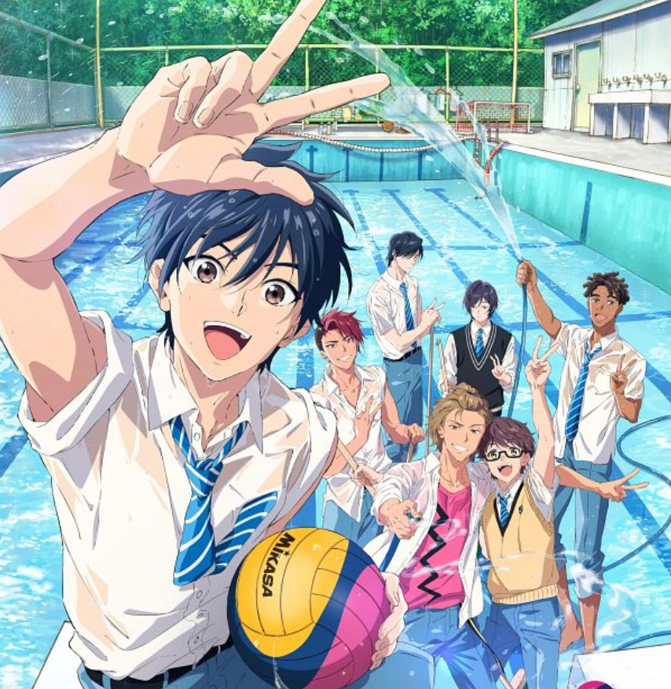
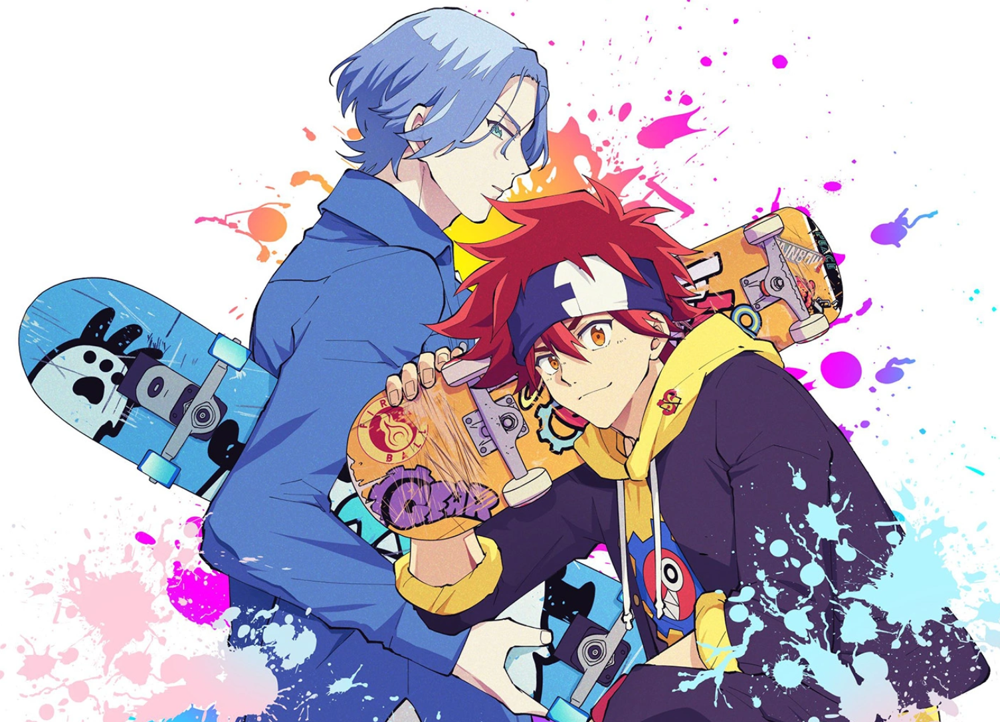

Haikyu!! is a Japanese manga series written and illustrated by Haruichi Furudate.
It was serialized in Shueisha's shōnen manga magazine Weekly Shōnen Jump, with its chapters collected in 45 tankōbon volumes.
The story follows Shoyo Hinata, a boy determined to become a great volleyball player despite his small stature.
Re-Main:

During Winter of his third middle school year, water polo star Minato Kiyomizu got caught in an accident and has been in coma ever since.
Exactly 203 days later, Minato regained his consciousness, but lost three years of his memories.
Due to a certain reason, he decided to go back to water polo, but has no memories of his skill, let alone the sports' rules.
Thus, Minato's efforts to catch up on what he has lost begins.
Sk8 The Infinity:

In Okinawa, a group of hardcore skaters participate in a secret, no-holds-barred competition after midnight known as "S",
racing each other on skateboards down a winding road carved out of an abandoned mine and occasionally forming rivalries,
also known as "beefs", with each other. Reki, a high school sophomore and hardcore skater, takes new transfer student Langa to S one night,
and ends up pulling him into the world of skateboarding.
Stars Align:
The boys soft tennis club faces dissolution due to the lack of results and skill.
Desperate for new members with athletic ability, Toma Shinjo leads a recruitment drive and come up empty.
He approaches the transfer student Maki Katsuragi after watching him catch a stray cat, but Maki declines,
not wanting to join any clubs.